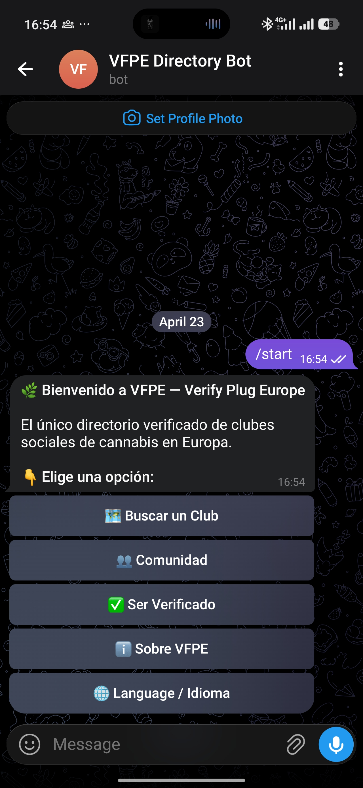
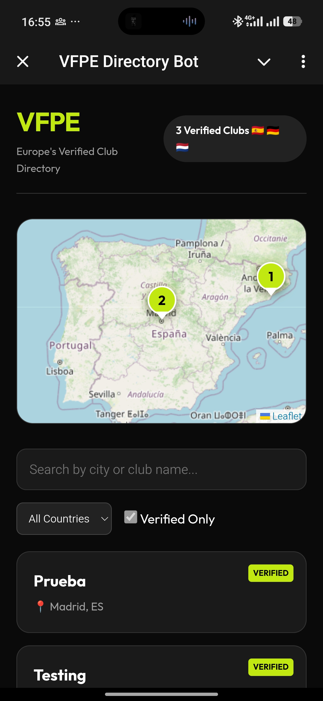
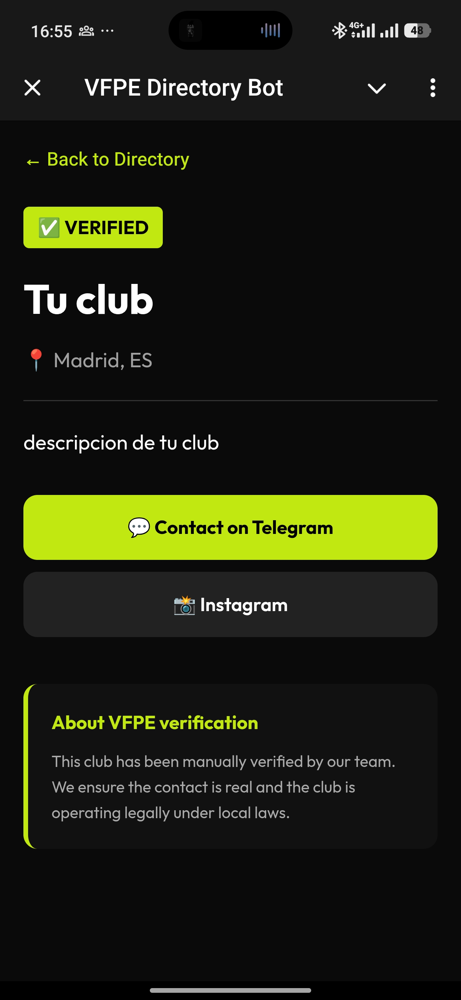
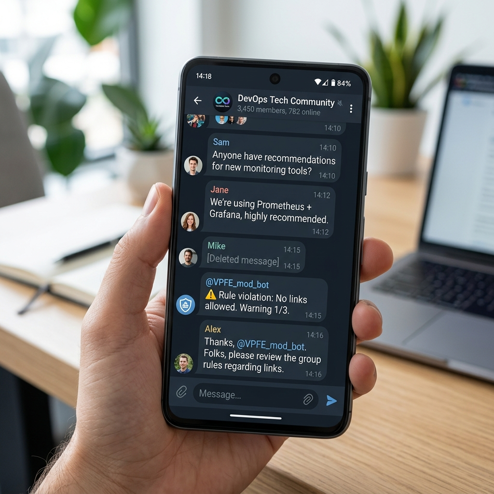

Main Bot
El núcleo inteligente
Navegación fluida por ciudades con soporte bilingüe.
- Selector de Idioma (ES/EN)
- Directorio por Provincias
- Registro de Clubes In-Bot
- Panel Admin para Aprobaciones

Navegación fluida por ciudades con soporte bilingüe.


Mapa interactivo con diseño premium y carga instantánea.
Toda la información del club en una sola pantalla elegante.

Entra en @VBerifyPlugEU_bot y pulsa /start. Elige tu idioma favorito.
Pulsa "🗺 Find a Club" para abrir la Mini App y ver el mapa interactivo.
Selecciona una ciudad o usa el buscador para ver los clubes verificados.
Entra en la ficha del club y contacta directamente por Telegram.
Pulsa "✅ Get Verified" y envía los datos de tu club para revisión.
Usa /admin para ver solicitudes pendientes y aprobarlas con un clic.

Protección automática para que la comunidad sea siempre segura.
Ecosistema VFPE: Seguridad, Confianza y Diseño.
2026 - VFPE Ecosystem